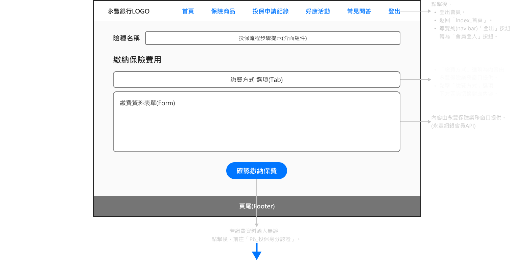
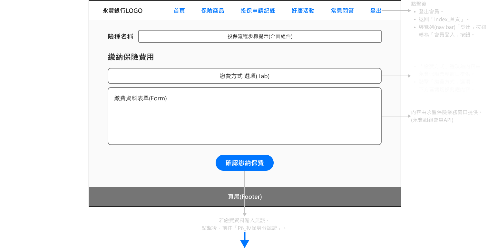
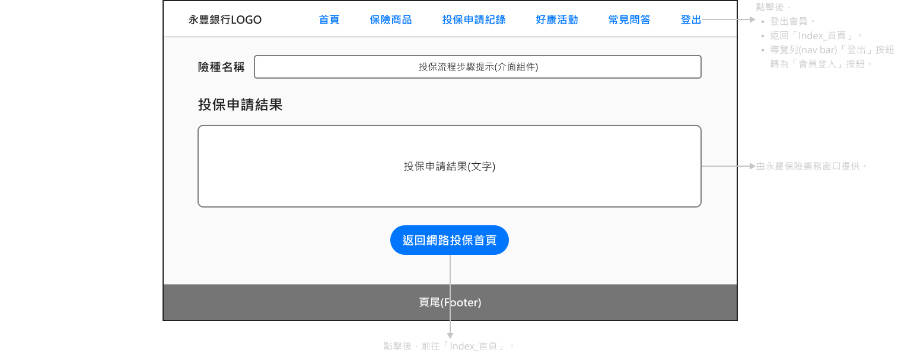
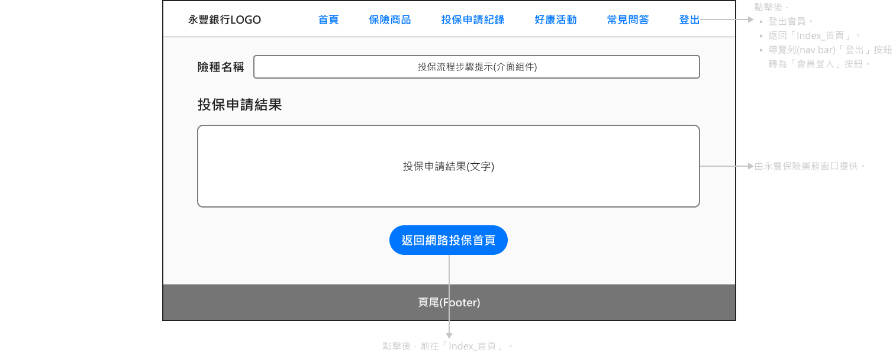

投保網站 前期規劃
一、桌面研究
由3個方向進行資料收集、彙整
- 從保險業務了解客戶簽訂保單流程。
- 探訪相關類型網站，分析架構、內容、流程。
- 從網路社群了解大眾，對於網路投保的使用經驗。
二、釐清業務流程與需求情境
從直面市場的業務單位，獲取資訊衍生網站內容。
以「專家訪談」方式，訪談保險業務，認識簽訂保單過程。
由簽訂保單過程，整理重點事項
- 依客戶保險需求，介紹商品資訊。
- 評估客戶條件給予投保建議。
- 確定投保意願，說明相關條款和規定。
- 填寫客戶投保申請資料。
- 確認客戶同意相關條款和規定。
- 收取投保費用。
- 申請投保。
- 詢問客戶是否有投保相關問題。
- 推廣公司行銷活動。
找出簽訂保單的認知需求
- 整理保險商品重點、理賠項目額度、投保規定。
- 依條件規劃方案、計算投保費用。
- 備妥商品條款和規定文件。
- 備妥申請投保資料表單。
- 於條款和規定文件中，讓客戶同意簽名。
- 取得付款資料。
- 將保險資料留存紀錄，寄送至核保單位。
- 了解客戶常有的問題並備妥回答內容。
- 備妥行銷活動文宣。
三、操作流程與功能內容
確認使用目標

以實體業務流程、同類型網站 → 規劃網站操作流程
以投保業務的認知需求、同類型網站，盤點網站功能和內容
保險商品
- 保險商品資訊。
- 投保費用試算。
- 商品條款和投保文件。
投保流程
- 投保表單。
- 審閱文件機制。
- 繳納保費。
- 身分驗證。
- 投保申請紀錄。
客戶服務
- 常見問答。
- 活動資訊。
四、以操作流程和功能內容，歸納資料項目

五、以資料項目規劃網站互動機制

六、釐清資料來源、內容項目和互動機制
網
站
會
員
站
會
員
網站會員 資料來源：
1.使用者登入永豐會員後，前端抓取使用者Token給予後端，後端以永豐網銀會員API抓取個人資料至資料庫。
2.前端抓取使用者網頁輸入的電子信箱-內容、通訊地址-內容、身故受益人名單資料-內容至資料庫。 由前端程式根據使用者Token，於資料庫取得後，顯示於網站頁面。
2.前端抓取使用者網頁輸入的電子信箱-內容、通訊地址-內容、身故受益人名單資料-內容至資料庫。 由前端程式根據使用者Token，於資料庫取得後，顯示於網站頁面。
內容項目：
個人資料
姓名：陳大明
性別：男
國籍：本國
身分證字號：A12345****
出生日期：1989.01.**
聯絡電話：0987******
電子信箱：m****@sinopac.com
通訊地址：104台北市中山區南京東路********
身故受益人名單資料
*會有數量不定、多位身故受益人的情況
*會有數量不定、多位身故受益人的情況
姓名：林美美
順位：1(數字資料範圍根據身故受益人數而定)
國籍：本國
與被保險人關係：配偶
身分證字號：B12345678
出生日期：1987.12.10
聯絡手機：0987******
聯絡電話：02-2251111#506
通訊地址：104台北市中山區南京東路********
銀行帳戶：永豐銀行世貿分行0000222200002222
使用者操作機制：
使用者
可以註冊/登入網站會員。
將使用者導向永豐網銀登入頁，註冊會員登入後，導回至本站。
可以藉由手機簡訊驗證會員身分。
簡訊傳送驗證碼至會員手機，使用者於網頁欄位正確輸入後完成身分驗證。
可以輸入、上傳身故受益人名單資料。
使用者於投保時輸入身故受益人資料，由前端上傳至後端資料庫(方便下次投保無須重新填寫)。
保
險
商
品
險
商
品
保險商品 資料來源：
1.建立管理後台，由永豐業務單位於管理後台上傳投保資訊至資料庫。
2.保險公司提供API，由後端透過API抓取保險內容、要保人和被保險人資料、要保人和被保險人投保資料至資料庫。
由前端程式於資料庫取得後，顯示於網站頁面。
2.保險公司提供API，由後端透過API抓取保險內容、要保人和被保險人資料、要保人和被保險人投保資料至資料庫。
由前端程式於資料庫取得後，顯示於網站頁面。
內容項目：(泰安旅平險為例)
投保資訊
種類：旅平險
投保資格：要保人投保年齡限成年...。
保障範圍：區域：國內和國外...。
投保年齡：成年~保險年齡64歲...。
投保金額：100萬~1000萬。
繳費方式：永豐銀行信用卡，永豐銀行帳戶...。
商品條款文件連結：https://xxx/xxx/xxxxx.pdf
保險內容
商品名稱：泰玩美旅遊平安保險
商品方案：超值型 / 升級型
投保期間：--
投保天數：--
交通工具：汽車、火車、渡輪、飛機
旅遊目的：娛樂、出差、探親、遊學
投保額度：100萬 / 200萬 / 300萬 / 400萬 / 500萬 / 600萬 / 700萬 / 800萬 / 900萬 / 1000萬
要保人和被保險人資料
目前是否從事特殊職業：是 / 否
目前是否受監護、受輔助宣告：是 / 否
要保人和被保險人投保資料
家庭主要經濟來源：本人 / 父母 / 祖父母 / 兄弟姊妹
個人年收入：50萬(含)以下 / 50萬~100萬 / 100萬~300萬 / 300萬以上
家庭年收入：50萬(含)以下 / 50萬~100萬 / 100萬~300萬 / 300萬以上
保費來源：薪資、投資收入、儲蓄、財產繼承或贈與
最近一年內是否居住於境外超過半年：是 / 否
是否為國內、國外或國際組織重要政治性職務人士：是 / 否
是否已投保其他商業實支實付型傷害醫療保險：是 / 否
使用者操作機制：
使用者
可以查看保險商品資訊。
可以對保險商品進行投保費用試算。
使用者於網站表單欄位輸入資料，根據計算規則得出保費金額。
欄位項目、計算規則來源來自保險公司API文件。
欄位項目、計算規則來源來自保險公司API文件。
可以申請投保保險商品。
使用者登入永豐網銀會員，於網頁輸入保險商品欄位資料進行投保申請。
投
保
申
請
資
料
保
申
請
資
料
投保申請 資料來源：
1.後端產生的管理資料存於資料庫。
2.資料庫的網站會員資料、保險商品-項目名稱。
3.前端抓取使用者網頁輸入的保險資料-內容存於資料庫。
由前端程式根據使用者Token，於資料庫取得後，顯示於網站頁面。
2.資料庫的網站會員資料、保險商品-項目名稱。
3.前端抓取使用者網頁輸入的保險資料-內容存於資料庫。
由前端程式根據使用者Token，於資料庫取得後，顯示於網站頁面。
內容項目：
管理資料
申請時間：2024.07.10 14:00
訂單號碼：ABCD0000123456789
保單號碼：DBAC0000123456789
處理狀態：投保完成 / 申請中 / 申請失敗
保險資料
要保險人和被保險人資料：
來源於網站會員資料、保險商品-項目名稱、使用者輸入的資料內容
姓名：陳道*
性別：男
國籍：本國
身分證字號：A12345****
聯絡電話：0987******
電子信箱：m****@sinopac.com
通訊地址：104台北市中山區南京東路********
目前是否從事以下職業：否
目前是否受監護、受輔助宣告：否
保險內容：
來源於保險商品-項目名稱、使用者輸入的資料內容
商品名稱：泰玩美旅遊平安保險
商品方案：超值型
投保期間：2024.05.20 03:00~2024.05.25 03:00
投保天數：5天
交通工具：汽車、飛機
旅遊目的：娛樂
投保額度：500萬
要保人和被保險人投保資料：
來源於保險商品-項目名稱、使用者輸入的資料內容
家庭主要經濟來源：本人
個人年收入：50萬(含)以下
家庭年收入：50萬(含)以下
保費來源：薪資
最近一年內是否居住於境外超過半年：否
是否為國內、國外或國際組織重要政治性職務人士：否
是否已投保其他商業實支實付型傷害醫療保險：否
身故受益人
類型：指定受益人/法定繼承人
給付方式：順位/均分
名單資料：
來源於網站會員的身故受益人名單資料、使用者輸入的資料內容
姓名：林美美
順位：1(數字資料範圍根據身故受益人數而定)
國籍：本國
與被保險人關係：配偶
身分證字號：B12345678
出生日期：1987.12.10
聯絡手機：0987******
聯絡電話：02-2251111#506
通訊地址：104台北市中山區南京東路********
銀行帳戶：永豐銀行世貿分行0000222200002222
使用者操作機制：
使用者
可以填寫投保申請資料表單。
表單內容來自會員資料、保險商品資料。
可以儲存投保申請資料，成為網站會員資料。
資料為電子信箱、通訊地址、身故受益人-名單資料。
可以查看投保申請紀錄。
內容為申請資料、保險資料、身故受益人。
常
見
問
答
見
問
答
常見問答 資料來源：
建立管理後台，由永豐業務單位於管理後台上傳問答管理-內容至資料庫。
由前端程式於資料庫取得後，顯示於網站頁面。
由前端程式於資料庫取得後，顯示於網站頁面。
內容項目：
問答管理
類別：會員須知、投保申請、保險資訊
題號：1(數字資料範圍根據問題題數而定)
問題描述：透過網路申請投保好處...？
答題內容：申請資料直送保險公司...。
使用者操作機制：
使用者
可以查看常見問答內容。
內容為類別、題號、問題描述、答題內容。
活
動
資
訊
動
資
訊
活動資訊 資料來源：
建立管理後台，由永豐業務單位於管理後台上傳活動管理至資料庫。
由前端程式於資料庫取得後，顯示於網站頁面。
由前端程式於資料庫取得後，顯示於網站頁面。
內容項目：
活動管理
名稱：e起得LINE點數。
期間：2021.10.1 ~ 2021.12.31
內容介紹：活動期間成功投保任一...。
布告事項：得獎名單將於2022.01...。
注意事項：本活動為機率抽獎，不...。
使用者操作機制：
使用者
可以查看活動資訊。
內容為名稱、期間、內容介紹、布告事項、注意事項。
接續以資訊架構，建立頁面布局
已瀏覽完 資訊架構 規劃內容
前言
以資訊架構內容為基礎，進行圖像化呈現。
一、規劃網站地圖

二、由網站地圖繪製頁面藍圖
以投保流程為例。


 

 

三、以網站頁面藍圖，定義功能流程圖
以繳納保費到完成投保申請為例。

接續繪製線框稿呈現功能機制
已瀏覽完 頁面布局 規劃內容